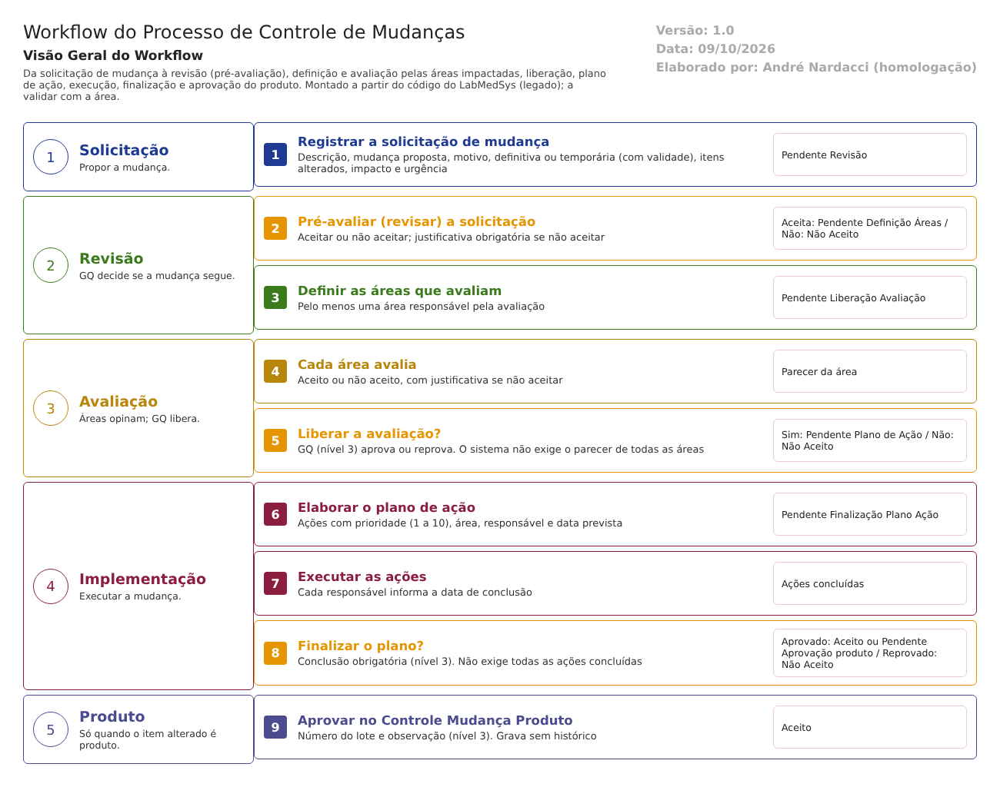

Objetivo
Este documento descreve o fluxo de controle de mudanças no LabMedSys. Vai da solicitação de mudança à revisão pela Garantia da Qualidade (pré-avaliação), à escolha das áreas que avaliam, ao parecer de cada área, à liberação da avaliação, ao plano de ação, à execução, à finalização e, quando a mudança envolve produto, à aprovação final no Controle Mudança Produto.
Foi montado a partir do código do sistema legado. O que depende da prática da área está marcado como a validar. Os casos de teste estão no fim.
Escopo
- Solicitação, edição e cancelamento da mudança.
- Revisão (pré-avaliação) e definição das áreas que avaliam.
- Avaliação pelas áreas e liberação da avaliação.
- Plano de ação, execução e finalização.
- Aprovação do produto (Controle Mudança Produto).
Fora do escopo: o fluxo de desvios (desvios-capa.md), que pode indicar a necessidade de uma mudança mas não abre a solicitação; validação e qualificação, que são só protótipo na GQ; e a atualização de documentos no Controle de Documentos.
Nomes das telas: como aparecem no menu ou no alto de cada tela. Os caminhos de código são relativos a 5.garantia_qualidade/app/. Para encurtar: RM/, Avaliacao/ e PlanoAcao/ querem dizer HSolutions.GQ.UI/Areas/<pasta>/Controllers/; Service/ quer dizer HSolutions.GQ.Domain/Service/; Helpers/ quer dizer HSolutions.GQ.UI/Helpers/.
Quem faz o quê: a GQ usa três níveis de grupo de perfil (ver o fluxo de desvios). Neste fluxo, o nível 1 só solicita; o nível 2 solicita, revisa e avalia pela sua área; só o nível 3 libera a avaliação, finaliza o plano e aprova o produto. A validar: quem da empresa está em cada nível.
Visão geral do processo

Qualquer área registra uma Solicitação de Mudanças: o que muda, por quê, se é definitiva ou temporária, que itens são alterados (processo, formulação, regulatórios, produto, projetos), o impacto e a urgência. A Garantia da Qualidade revisa a solicitação (pré-avaliação): se aceitar, escolhe as áreas que precisam avaliar. Cada área registra seu parecer (aceito ou não aceito). A GQ então libera a avaliação, aprovando ou reprovando a mudança.
Aprovada, a mudança ganha um plano de ação com responsáveis e prazos. Os responsáveis informam a execução e a GQ finaliza o plano. Se a mudança envolve produto, ela ainda passa pelo Controle Mudança Produto, onde se registra o lote; senão, termina como Aceito.
Situações da mudança, na ordem (como aparecem na tela):
| # | Situação | Quem tira a mudança dela | Tela |
|---|---|---|---|
| 1 | Pendente Revisão | GQ (nível 2 ou 3) | Pré-Avaliação de Mudanças |
| 2 | Pendente Definição Áreas Avaliação | GQ | Pré-Avaliação de Mudanças (áreas) |
| 3 | Pendente Liberação Avaliação | Áreas (parecer) e GQ nível 3 (liberação) | Avaliação de Mudanças e Liberação Avaliação de Mudanças |
| 4 | Pendente Plano de Ação | GQ | Plano de Ação |
| 5 | Pendente Finalização Plano Ação | Responsáveis (execução) e GQ nível 3 (finalização) | Execução Plano de Ação e Finalização Plano de Ação |
| 6a | Pendente Aprovação produto | GQ nível 3 | Controle Mudança Produto |
| 6b / 7 | Aceito | — (fim) | — |
| — | Não Aceito | — (fim): na revisão, na liberação ou na finalização | — |
| — | Cancelado | — (fim), só a partir da situação 1 | Solicitação de Mudanças |
Descrição funcional das etapas
"A numeração das regras de negócio é reiniciada em cada atividade, visando facilitar sua identificação e manutenção."
Solicitação de mudança
Regras de negócio
- RN001 – Obrigatórios: descrição, tipo de mudança (definitiva ou temporária), mudança proposta, área solicitante, pelo menos um item a ser alterado e o motivo (
Service/SolicitacaoMudancaValidator.cs:25a:86). - RN002 – Itens a ser alterados: processo, formulação, regulatórios, produto e projetos (
Hsolutions.GQ.DB/dml.sql:1-17). Se for produto, a descrição do produto é obrigatória; se for outros, o texto é obrigatório (SolicitacaoMudancaValidator.cs:72e:78). - RN003 – Mudança temporária exige data de validade, que precisa ser futura. A mudança definitiva não aceita data (
SolicitacaoMudancaValidator.cs:36e:44). - RN004 – Registra o impacto (cinco níveis, de "vital importância" a "pouca expressão") e a urgência (imediata até um mês, curto, médio ou longo prazo) (
HSolutions.GQ.Domain/Entities/SolicitacaoMudanca.cs:28-29). - RN005 – As áreas de impacto podem ser informadas, mas não são obrigatórias: a regra está desligada no código (
SolicitacaoMudancaValidator.cs:92, comentada). - RN006 – Ao salvar, a mudança vai para Pendente Revisão (
RM/SolicitacaoMudancaController.cs:606), com histórico (:275). - RN007 – Edição só em Pendente Revisão: por nível 2 ou 3, pelo responsável, ou por alguém da mesma área do responsável (
Helpers/GerenciadorAcessoTelaSolicitacao.cs). A edição grava histórico (SolicitacaoMudancaController.cs:325). - RN008 – Cancelamento pela tela, com justificativa e histórico (
SolicitacaoMudancaController.cs:383-405). Há um segundo caminho no código, "Excluir solicitação", que cancela sem justificativa, sem histórico e sem conferir a situação (SolicitacaoMudancaController.cs:750-759). O botão não aparece na lista; a função existe no script da tela (HSolutions.GQ.UI/Areas/RM/Script/SolicitacaoMudancaIndex.js:115). A confirmar no teste se algum botão a usa.
Telas do sistema
| Módulo | Tela | Finalidade |
|---|---|---|
| Garantia da Qualidade | Solicitação de Mudanças | Registrar, editar, visualizar e cancelar |
Revisão (pré-avaliação) e definição das áreas
Regras de negócio
- RN001 – A GQ aceita ou não aceita a solicitação. Não aceitar exige justificativa (
Service/PreAvaliacaoValidator.cs:32) e encerra a mudança como Não Aceito. Aceitar leva a Pendente Definição Áreas Avaliação (RM/PreAvaliacaoMudancaController.cs:323-327). - RN002 – Na revisão, a GQ pode ajustar a solicitação (itens, áreas de impacto, validade). As alterações gravam histórico (
PreAvaliacaoMudancaController.cs:415). - RN003 – Em seguida, a GQ escolhe pelo menos uma área que vai avaliar (
Service/AreasResponsaveisAvaliacaoValidator.cs:32). A mudança vai direto para Pendente Liberação Avaliação (PreAvaliacaoMudancaController.cs:556). - RN004 – A data da revisão é a que vem da tela (
PreAvaliacaoMudancaController.cs:312), preenchida com a data do dia quando a tela abre (:162). - RN005 – Nível 1 não revisa. A revisão fica bloqueada depois que alguma área avaliou (
Helpers/GerenciadorAcessoTelaPreAvaliacao.cs).
Telas do sistema
| Módulo | Tela | Finalidade |
|---|---|---|
| Garantia da Qualidade | Pré-Avaliação de Mudanças | Aceitar ou não e definir as áreas que avaliam |
Avaliação pelas áreas e liberação
Regras de negócio
- RN001 – Cada área escolhida registra seu parecer: aceito ou não aceito. Não aceitar exige justificativa (
Avaliacao/AvaliacaoMudancaController.cs:214-216;Service/AvaliacaoSolicitacaoValidator.cs:25). - RN002 – A data do parecer é a da tela, se informada (
AvaliacaoMudancaController.cs:229). - RN003 – Nível 1 não avalia. A avaliação fica bloqueada depois da liberação (
Helpers/GerenciadorAcessoTelaAvaliacaoMudancaIndex.cs). - RN004 – Liberação: só nível 3 (
Helpers/GerenciadorAcessoTelaLiberacaoSolicitacaoIndex.cs). Aprovar leva a Pendente Plano de Ação; reprovar leva a Não Aceito, com justificativa obrigatória (Avaliacao/LiberacaoAvaliacaoMudancaController.cs:177;Service/LiberacaoAvaliacaoValidator.cs:25). - RN005 – A liberação não depende dos pareceres. O sistema permite liberar enquanto a mudança está em Pendente Liberação Avaliação, situação em que ela entra logo que as áreas são escolhidas. Nenhuma regra exige que todas as áreas tenham avaliado, e um "não aceito" de uma área não impede a aprovação. Ponto de atenção 1.
- RN006 – A data da liberação é a da tela, se informada (
LiberacaoAvaliacaoMudancaController.cs:167).
Telas do sistema
| Módulo | Tela | Finalidade |
|---|---|---|
| Garantia da Qualidade | Avaliação de Mudanças | Parecer de cada área |
| Garantia da Qualidade | Liberação Avaliação de Mudanças | Aprovar ou reprovar a mudança |
Plano de ação, execução e finalização
Regras de negócio
- RN001 – O plano exige pelo menos uma ação, cada uma com descrição, prioridade de 1 a 10, área, responsável e data prevista, que não pode ser anterior à data da solicitação (
Service/PlanoAcaoValidator.cs:33a:86). - RN002 – Ao salvar o plano, a mudança vai direto para Pendente Finalização Plano Ação (
PlanoAcao/PlanoAcaoController.cs:231). Não há aprovação do plano antes da execução. - RN003 – Só abrir a tela de visualização do plano cria um plano vazio e o liga à solicitação, sem histórico da ligação (
PlanoAcaoController.cs:161-193). Efeito colateral: uma consulta altera dados. - RN004 – Execução: cada responsável informa a conclusão da sua ação. A data de conclusão é obrigatória, não pode ser anterior à solicitação nem futura (
Service/AvaliacaoPlanoAcaoValidator.cs:27a:40). A ação fica Finalizado (PlanoAcao/AvaliacaoPlanoAcaoController.cs:397). - RN005 – Finalização: só nível 3 (
Helpers/GerenciadorAcessoTelaLiberacaoPlanoAcao.cs). A conclusão é obrigatória (Service/LiberacaoPlanoAcaoValidator.cs:24). Não exige que todas as ações estejam concluídas. Ponto de atenção 2. - RN006 – Plano aprovado: se algum item alterado é produto, a mudança vai para Pendente Aprovação produto; senão, termina como Aceito (
PlanoAcao/LiberacaoPlanoAcaoController.cs:273-278). Plano reprovado: a mudança termina como Não Aceito (:304-305), mesmo que parte das ações já tenha sido executada. - RN007 – Não há etapa de verificação da eficácia depois da implementação (RDC 658/2022, art. 8º, XIII).
Telas do sistema
| Módulo | Tela | Finalidade |
|---|---|---|
| Garantia da Qualidade | Plano de Ação | Ações, prioridades, responsáveis e prazos |
| Garantia da Qualidade | Execução Plano de Ação | Cada responsável conclui sua ação |
| Garantia da Qualidade | Liberação Plano de Ação (na tela: "Finalização Plano de Ação") | Concluir e aprovar ou reprovar |
Aprovação do produto
Regras de negócio
- RN001 – Só para mudanças com item produto, em Pendente Aprovação produto, e só nível 3 (
Helpers/GerenciadorAcessoTelaControleMudancaProdutoIndex.cs). - RN002 – Registra o número do lote, digitado livremente, sem consulta à Produção ou ao Estoque, mais observação e justificativa (
RM/ControleMudancaProdutoController.cs:160em diante). - RN003 – A justificativa não é obrigatória: a regra está desligada (
Service/ControleProdutoMudancaValidator.cs:24, comentada). - RN004 – A mudança termina como Aceito (
ControleMudancaProdutoController.cs:218), numa gravação sem histórico (:227). Ponto de atenção 3.
Telas do sistema
| Módulo | Tela | Finalidade |
|---|---|---|
| Garantia da Qualidade | Controle Mudança Produto | Lote ligado à mudança e aprovação final |
Mudança temporária
Regras de negócio
- RN001 – A data de validade da mudança temporária só serve de filtro na lista da finalização do plano (
PlanoAcao/LiberacaoPlanoAcaoController.cs:81). Quando a validade vence, o sistema não avisa ninguém, não volta a situação nem pede o encerramento da mudança. Nenhuma tela de mudanças envia notificação ou e-mail.
Pontos de atenção
1. A GQ pode aprovar a mudança sem o parecer das áreas. A liberação fica disponível assim que as áreas são escolhidas e não confere se elas avaliaram nem se alguma não aceitou. A avaliação pelas áreas impactadas, base do art. 8º, XII da RDC 658/2022 (avaliação prospectiva antes da aprovação), pode ser pulada. A confirmar no teste (CT-GQ-034).
2. Finalizar sem concluir e sem avaliar a eficácia. O plano pode ser finalizado com ações pendentes, e não existe verificação, depois da implementação, de que o objetivo foi alcançado sem impacto negativo (art. 8º, XIII). O plano também começa a ser executado sem ter sido aprovado.
3. A aprovação final do produto não fica na trilha de auditoria. O Controle Mudança Produto grava sem histórico, com justificativa opcional e lote digitado à mão. É justamente a etapa que liga a mudança a um lote fabricado.
4. Há dois cancelamentos, um sem rastro. O cancelamento pela tela pede justificativa e grava histórico. O "Excluir solicitação" muda a situação para Cancelado sem justificativa nem histórico.
5. Mudanças temporárias não vencem. Não há aviso nem encerramento quando a validade passa.
6. A mudança não conversa com o resto. O desvio que marca "necessário abrir controle de mudança" não abre a solicitação. A mudança não exige validação (protótipo na GQ), não aponta os documentos a revisar no Controle de Documentos e não informa o item "regulatórios" à tela de Assuntos Regulatórios. Datas de revisão, parecer e liberação vêm da tela.
Casos de teste
Dados: os usuários TESTE NIVEL 1, TESTE NIVEL 2 e TESTE NIVEL 3 do fluxo de desvios, em duas áreas diferentes. Um produto TESTE da Produção, se houver, e o lote TESTE do Estoque. Todas as solicitações com descrição começando por TESTE.
| Caso | O que fazer | Resultado esperado |
|---|---|---|
| CT-GQ-030 | Solicitação sem descrição, sem tipo, sem item e sem motivo | Recusa, com as mensagens de cada campo |
| CT-GQ-031 | Mudança temporária sem validade, depois com validade passada, depois futura; sem áreas de impacto | Recusa nas duas primeiras; a terceira salva em Pendente Revisão. Registrar que as áreas de impacto não são exigidas |
| CT-GQ-032 | Revisão não aceitando, sem justificativa e depois com justificativa | Recusa; depois Não Aceito |
| CT-GQ-033 | Em outra solicitação (item produto), revisar aceitando e escolher duas áreas | Pendente Liberação Avaliação |
| CT-GQ-034 | Com o TESTE NIVEL 3, liberar (aprovar) a avaliação antes de qualquer área avaliar | Pela norma, deveria exigir os pareceres. Registrar se aprovar (ponto 1) |
| CT-GQ-035 | Em outra solicitação, uma área "não aceita" (com justificativa) e a GQ libera aprovando | Registrar se aprovar apesar do "não aceito" |
| CT-GQ-036 | Com o TESTE NIVEL 2, abrir a Liberação Avaliação de Mudanças |
Sem botão de liberar |
| CT-GQ-037 | Plano de ação com prioridade 11 e data prevista anterior à solicitação | Recusa nas duas |
| CT-GQ-038 | Plano com duas ações; a mudança fica Pendente Finalização Plano Ação | Sem etapa de aprovação do plano |
| CT-GQ-039 | Abrir a visualização do plano de uma mudança sem plano e consultar o histórico | Registrar se a consulta criou o plano (RN003 do plano) |
| CT-GQ-040 | Executar uma ação com data futura e com data anterior à solicitação | Recusa nas duas |
| CT-GQ-041 | Finalizar o plano com uma ação ainda não concluída | Registrar se aceitar (ponto 2) |
| CT-GQ-042 | Mudança com produto: finalização aprovada | Pendente Aprovação produto |
| CT-GQ-043 | Controle Mudança Produto sem justificativa, lote TESTE; consultar o histórico |
Registrar se salvar sem justificativa e se não houver histórico (ponto 3) |
| CT-GQ-044 | Mudança sem produto: finalização aprovada | Aceito |
| CT-GQ-045 | Finalização reprovada com ações já executadas | Não Aceito |
| CT-GQ-046 | Cancelar uma solicitação em Pendente Revisão, com justificativa; consultar o histórico | Cancelado, com histórico |
| CT-GQ-047 | Procurar na tela Solicitação de Mudanças um botão "Excluir" | Registrar se existir e se cancela sem histórico (ponto 4) |
| CT-GQ-048 | Mudança temporária com validade de amanhã; no dia seguinte, consultar a mudança | Registrar que nada acontece no vencimento (ponto 5) |
| CT-GQ-049 | Desvio avaliado com "necessário abrir controle de mudança" (CT-GQ-016) | Nenhuma solicitação aberta (ponto 6) |
Prioridade (testes por risco): CT-GQ-034, 035, 041, 043 e 047 primeiro. Eles tocam aprovação, eficácia e trilha de auditoria.